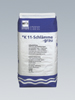

Серый шлам К11
K11 Schlamme grau
Минеральный гидроизоляционный шлам. Обладает хорошим сцеплением с поверхностью, может выдерживать нагрузку вскоре после нанесения. Устойчив к морской воде и низким температурам.
Для долгосрочной гидроизоляции минеральных оснований от влажности грунта и воды под давлением. Минеральная основа не должна содержать гипс, разделительные слои должны быть удалены. Применяется для строительных конструкций, соприкасающихся с грунтом, таких как подвалы, подземные гаражи и бетонные конструкции, а также для покрытия внутренней поверхности резервуаров питьевой воды. Для изготовления гидроизоляционного слоя между подвальным цоколем и основанием стены.
Испытан согласно инструкции немецкого Союза Строительной Химии.
Общенадзорный строительный сертификат.
Испытан согласно DVGW-W 347 и рекомендациям KTW.
Giscode Zp1
Расход: для защиты от влажности грунта - ок. 2 кг/м.кв. (слой прим. 1,2 мм)
для защиты от воды под давлением - ок. 4 кг/м.кв. (слой прим. 2,4 мм)
Упаковка: мешок 25 кг
Системные решения (файл PDF)
Гидроизоляционные шламы на минеральной основе
Подробнее...
 Эластичный серый шлам К11 образует гидроизоляционное покрытие, обладающее исключительно сильным сцеплением с основанием (1,6 Н/мм2). Поэтому он позволяет получать надежную, долгосрочную гидроизоляцию от напорной воды, воздействующей как с внутренней, так и с наружной стороны строительной конструкции на которую он нанесен. После отвердения Эластичный серый шлам К11 становится устойчивым к морозу и к морской воде, перекрывает микротрещины.
Эластичный серый шлам К11 образует гидроизоляционное покрытие, обладающее исключительно сильным сцеплением с основанием (1,6 Н/мм2). Поэтому он позволяет получать надежную, долгосрочную гидроизоляцию от напорной воды, воздействующей как с внутренней, так и с наружной стороны строительной конструкции на которую он нанесен. После отвердения Эластичный серый шлам К11 становится устойчивым к морозу и к морской воде, перекрывает микротрещины.
Подробнее...
Отсечная гидроизоляция или горизонтальная гидроизоляция применяется для предотвращения подъёма капиллярной влаги в сооружение по кирпичной кладке, бетону, камню и т.д. Одним из эффективных способов устройства надежной и долговременной отсечной гидроизоляции является создание внутри строительной конструкции горизонтального гидроизоляционного слоя с помощью окремнителя Кизай (Kiesey).
Подробнее...
Горизонтальная гидроизоляция против поднимающейся влаги при помощи средства Кизай – подвалы, шахты, тоннели, подземные гаражи, резервуары воды, канализация и т.д.
- для кладки, бетона, камня, скальной породы
- укрепляет и сохраняет строительную конструкцию
- предотвращает появление солевых выцветов, плесени и грибков
Подробнее...
Гидроизоляция ванной комнаты, душевых, санузлов и других сырых помещений изнутри, а также их ремонт и укладка плитки в соответствие с европейскими нормами достаточно сложен и трудоемок. Существенно упростить этот процесс позволяют новые гидроизоляционные материалы, применяемые при укладке плитки, такие как: “жидкий пластик” Акваблокер, эластичные шламы Ардалон 1К плюс и Ардалон 2К плюс, эластичная гидроизоляция Флексдихт и эпоксидные материалы Унипокс, производства Ardal и Hey’Di - Германия.
Подробнее...